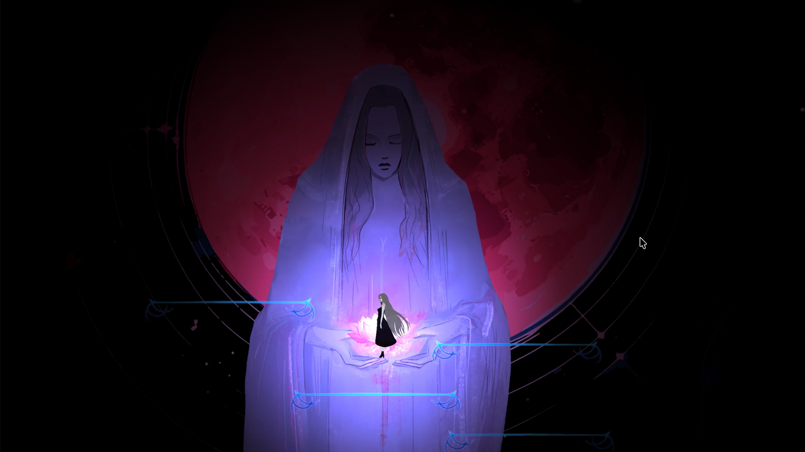
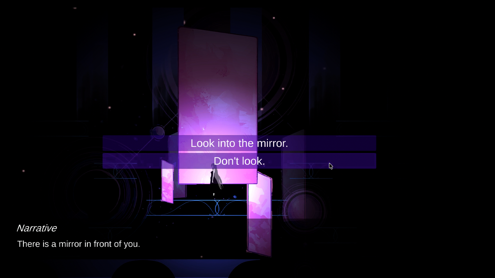
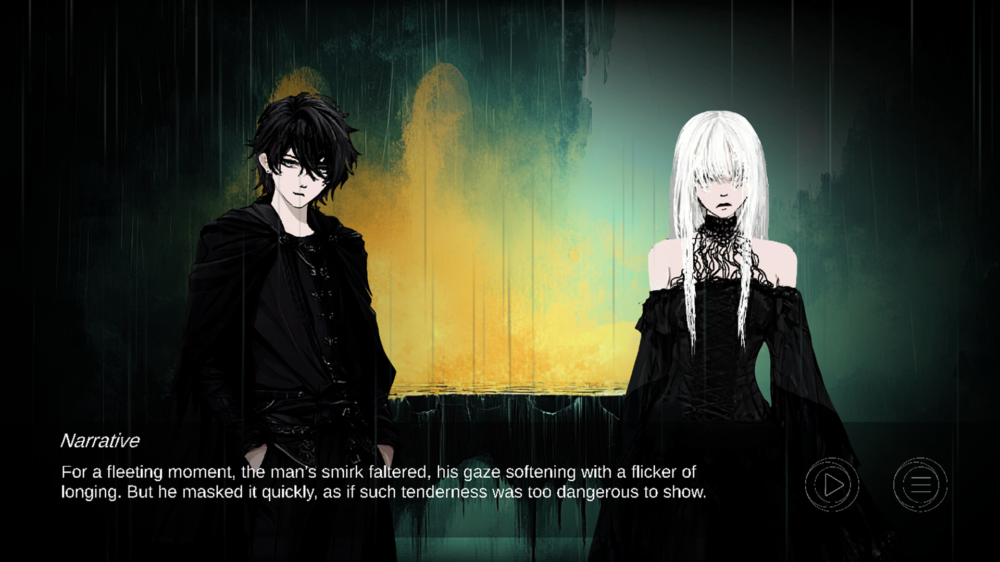
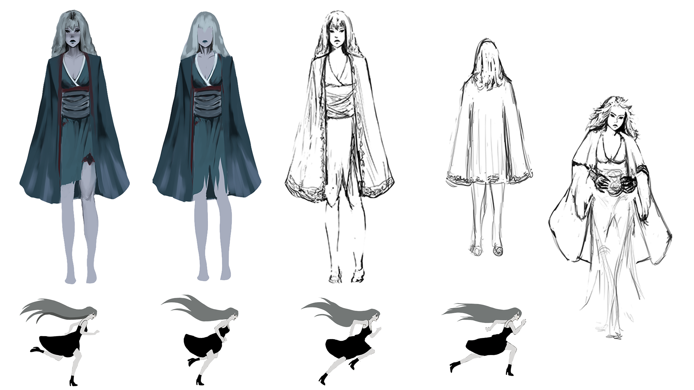
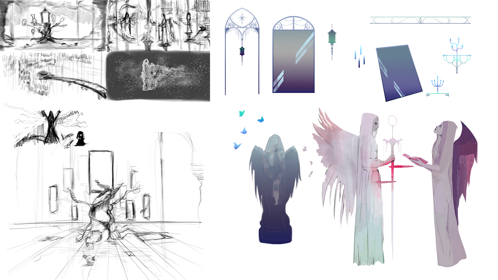
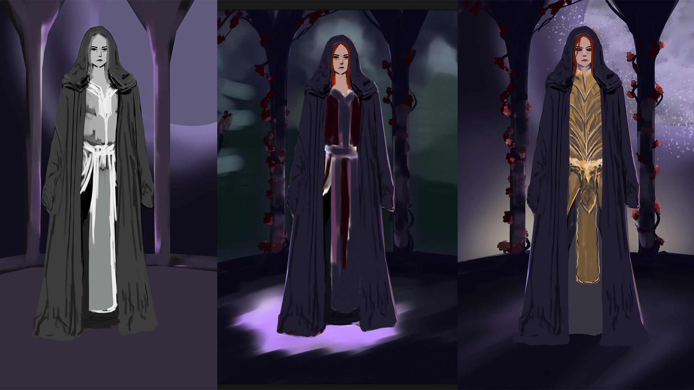
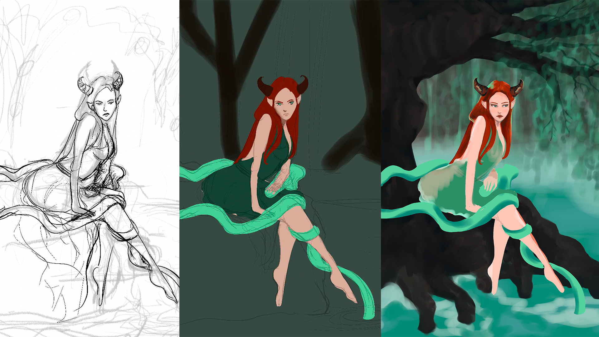

Aether
Aether is a personal narrative-based role-playing game project that began as an exploration of choice, memory, identity, morality, and time. The player begins with amnesia and gradually constructs the protagonist's identity through decisions made inside the story world.
Concept
The project started from a question: if a game character has no memory, can the player build that character through choice? Aether uses amnesia not only as a plot device, but as a way to connect player agency with identity formation.
Below are screenshots and videos from the game I amde to learn more about game design and development. This is a 2D platformer game featuring a choice-driven narrative. I developed both the coding and the artwork, with all assets, illustrations and animations fully hand-drawn. Earlier versions explored levels inspired by the eight deadly sins, gothic architecture, celestial imagery, angels, demons, loyalty, temptation, and self-knowledge. Over time, the project moved toward a stronger focus on story, characters, and interactive narrative structure.
Included below
- Character design sheets
- Environment and mood sketches
- In-game screenshots
- Short gameplay or prototype videos






